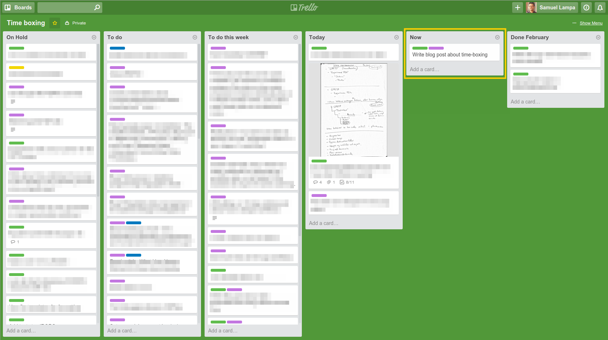

Time-boxing and a unified trello board = productivity

- Figure: Sketchy screenshot of how my current board looks. Notice especially the “Now” stack, marked in yellow, where you are only allowed to put one single card.
I used to have a very hard time getting an overview of my current work, and prioritizing and concentrating on any single task for too long. I always felt there might be something else that might be more important than what I were currently doing. And in fact, how would I know if I didn’t have the overview?
Having two part-time works, each with multiple parallel on-going projects with differing time-scale, as well as a lot of hobby interests in similar areas, probably did not help the situation.
I had tried organizing all my projects into separate trello-boards , with detailed tasks and check-lists and the like, but that didn’t work.
All of this changed after I read “Pomodoro Technique Illustrated”, by Staffan Nöteberg . The book revolves around one simple idea: Divide all your work into 25 minute work chunks and continuously during the day prioritize and select one work chunk at a time and work on it 100% exclusively for 25 minutes (you will set a timer that rings after that time. I just use the timer funciton in my smartphone). After that you allow yourself a few minutes (like, max 5) to goof out, check mail, facebook, hackernews or whatever urges your attention … and importantly, select the next work chunk to work on exclusively for 25 minutes.
I find the whole idea to be brilliant. By knowing that you will be able to goof out a bit after the 25 minutes enables you to suppress any urges to check up various things that hit your mind, such as checking communication channels.
Nöteberg’s book also go through practical tips on how to constantly plan and re-prioritize your current batch of work items for a few selected time periods, such as “today”, and “this week” and so on.
Anyhow, these ideas inspired me to create a much better way to organize my trello board as well, which I’m describing below.
Instead of having separate boards for each high level project, I created one single board on which I keep all my work tasks. I simply call the board “time-boxing” (another common term for the “pomodoro technique”).
In this board, inspired by Nöteberg’s book, I have created the following stacks:
- On hold
- To do this week
- [To do] Today
- [To do] Now
- Done [Month name] (Archived monthly)
(I use a labels to mark which of my part-time jobs a task belongs to … it sometimes belongs to more than one).
This new structure has done wonders for me! Slightly surprising, the most important stack of these were in fact the “Doing right now” stack in which, importantly, you are only allowed to have one single card! (See the yellow marked one in the screenshot below).
I had not realized the power of this one and didn’t have one. But the “right now” stack is now what really helps me remember what I’m currently doing, even after goofing out those 5 minutes andgetting dozens of other thought threads starting in my head, which would normally make me lose track of even what I’m working on right now. Now I can just glance on that card again, and immediately be on track with what I was supposed to do for the next 25 minutes of concentrated work.
In summary I can highly recommend the time-boxing technique, for anyone having problems concentrating, amidst too many current projects and tasks. If you want some more reading on the topic before staring, Nöteberg’s book is a good resource.
- Note: I don’t know Staffan Nöteberg, and I’m not paid to write this.